Online coaching in heel Nederland en België
Blijvend en energiek afvallen voor 40+ vrouwen, zonder streng dieet
Ik ben Mirlande Besemer, FitCoach sinds 2009. Ik help vrouwen van 40+ aan gewoontes die passen bij hun leven: meer energie en een plan dat je volhoudt, ook als het even tegenzit.
Waar wil je kennismaken?
Gratis en vrijblijvend · online rond de 30 minuten · in Middelharnis 45 minuten
- 5,0 op Google
- Top 3 van Nederland in persoonlijke coaching
- FitCoach sinds 2009
- 200+ mensen per maand met ons FitPlan
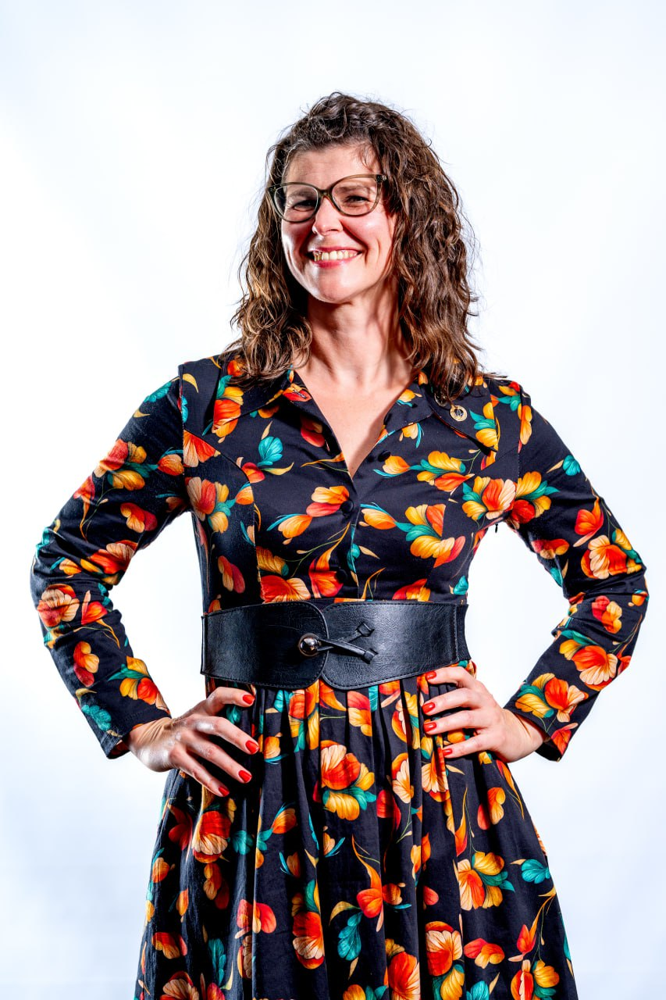
“Goede coach en interesseert zich in jou als mens.”
“Mirlande heeft me heel vaak en veel geholpen… ze is een lieve behulpzame vrouw die het beste voor je wilt.”
“Super begeleiding… Ze neemt de tijd voor je en begeleidt je stap voor stap, met veel passie voor haar mensen.”
“Mirlande is een geweldige, positieve en enthousiaste coach die probeert het beste uit jezelf te halen.”
“Mirlande is een fantastische coach. Ze steunt je niet alleen maar is ook echt eerlijk en oprecht!”
“Ze is iemand die je motiveert, begeleidt en de puntjes op de “i” zet.”
“Mirlande is echt een topper als coach.”
“Goede begeleiding. Voelt als thuiskomen om even bij te kletsen, met een eerlijk gesprek.”
Waar loop jij tegenaan?
Kies wat het meest op jou lijkt.
Je doet je best: je eet gezond, je beweegt. En toch past je favoriete broek niet meer, en blijft dat buikje maar zitten.
Na je 40e verandert je lichaam: je hormonen, je spiermassa en hoe je lijf met energie omgaat. Wat vroeger werkte, werkt nu vaak niet meer. Daar ligt het niet aan jou. In je FitPlan kijken we samen wat jouw lijf nú nodig heeft, zodat je inzet eindelijk iets oplevert.
Je weet het heus wel. Maar na een dag vol werk, gezin en hormonen die alle kanten op gaan, grijp je toch weer naar de koektrommel.
Wilskracht is niet het probleem. We pakken aan waar die trek vandaan komt: een ontbijt dat je verzadigt, regelmaat in je dag en een plan voor de momenten waarop het lastig wordt. Zonder verboden lijst: genieten mag gewoon.
Je wilt best meer bewegen. Alleen is je energie op, of zit je agenda al vol voordat de dag begint.
We beginnen niet bij sporten, maar bij je energie: wat je eet en wanneer. Beweging bouwen we daarna op in stappen die in jouw week passen, ook als je weinig tijd hebt.
Je regelt alles voor iedereen. Maar plannen wat jij nodig hebt, zoals bewegen en gezond eten, schiet er steeds bij in. En apart koken naast de rest van het gezin? Dat houd je niet vol.
Samen maken we een plan dat past in jouw drukke leven, met vaste momenten voor jezelf en maaltijden die het hele gezin gewoon mee-eet. En je staat er niet alleen voor: ik en de groep helpen je eraan herinneren, juist als het even tegenzit.
Koolhydraatarm, calorieën tellen, een sportabonnement: de eerste weken gaat het goed. Daarna sluipen de oude gewoontes er weer in, en voelt het alsof je opnieuw faalt.
Je faalt niet, die aanpak paste gewoon niet bij je leven. Samen bouwen we gewoontes op die je wél volhoudt: zonder ingewikkelde recepten, zonder alles af te wegen. En met wekelijkse begeleiding, zodat je niet alleen staat als het even tegenzit.

Gratis challenge · start dinsdag 1 december
In Balans December Door
Geniet van december, begin januari met een voorsprong.
Een adventskalender voor jezelf: 24 dagen lang elke ochtend één kleine actie van maximaal 5 minuten, in een WhatsApp-community met vrouwen van 40+. Geen dieet: pepernoten en kerstdiner mogen gewoon.
Doe gratis meeDoe eerst de korte test
Herken je dit? Afvallen na je 40e gaat niet meer vanzelf
Je weet vaak best wat je zou moeten doen. Maar wat vroeger werkte, werkt nu niet meer, en het volhouden is het lastige deel.
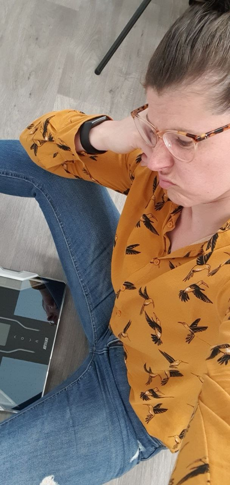
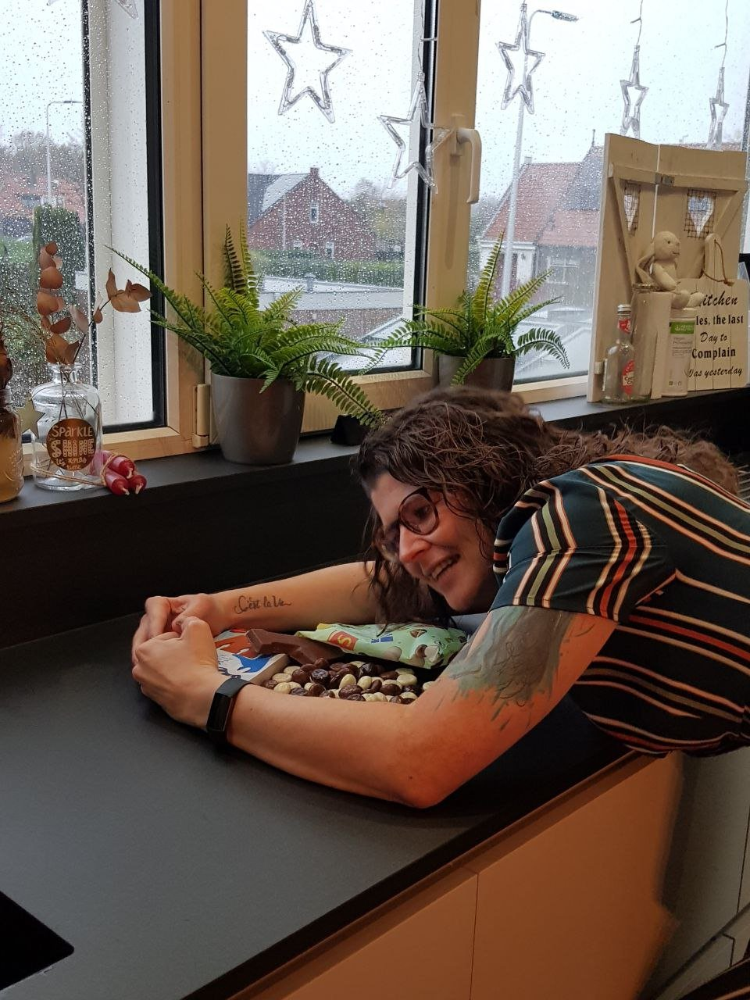
Dan begrijp ik je helemaal. Ik worstelde er zelf jarenlang mee.
Lees hier mijn verhaalWaarom afvallen na je 40e anders werkt
Het ligt niet aan een gebrek aan discipline. Je lichaam en je leven zijn veranderd, en dus vraagt afvallen nu een andere aanpak dan op je 25e.
Je hormonen veranderen
Rond de overgang merken veel vrouwen dat ze anders aankomen, vaker rond de buik, en dat slaap en energie wisselen. Dat maakt een streng dieet extra zwaar om vol te houden.
Je spiermassa neemt af
Zonder dat je er iets aan doet, neem je spiermassa met de jaren af. Genoeg eiwit en bewegen dat bij je past, helpen je sterk en energiek te blijven.
Je dagen zitten vol
Werk, gezin, ouders, zorgen. Een plan dat alleen werkt in een perfecte week, houd je niet vol. Je hebt gewoontes nodig die passen in jouw echte week.
Heb je klachten, gebruik je medicijnen of twijfel je over je gezondheid? Overleg dan eerst met je huisarts. Ik geef geen medisch advies.
Geen streng dieet, maar het ideale ontbijt en blijvende gewoontes
Je hoeft niet alles tegelijk om te gooien. We beginnen klein, bij het moment dat je hele dag bepaalt.
Begin bij je ontbijt
Een voedzaam ontbijt met genoeg eiwit en vezels geeft je een stevige start en minder trek halverwege de ochtend.
Kleine gewoontes die je volhoudt
Elke week één stap: meer water, groente bij de lunch, een wandeling. Zo bouw je gewoontes op die blijven, ook na de eerste weken.
Begeleiding als het even tegenzit
Een drukke week of een feestje hoort erbij. Je staat er niet alleen voor: met dagelijkse support pak je de draad snel weer op.
Zo werkt online begeleiding bij het afvallen, in heel Nederland en België
Gratis kennismaking (FitCheck)
Online of in Middelharnis bespreken we waar je nu staat, wat je doelen zijn en waar je uitdagingen zitten. Vrijblijvend en persoonlijk.
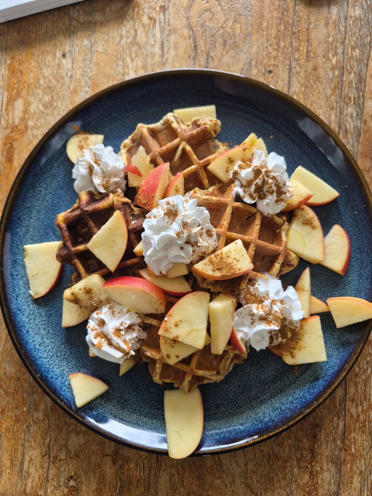
Een plan dat bij jou past
Je krijgt een persoonlijk en haalbaar voedingsplan en een supplementenpakket ter ondersteuning van jouw doelen en jouw dagelijkse leven.
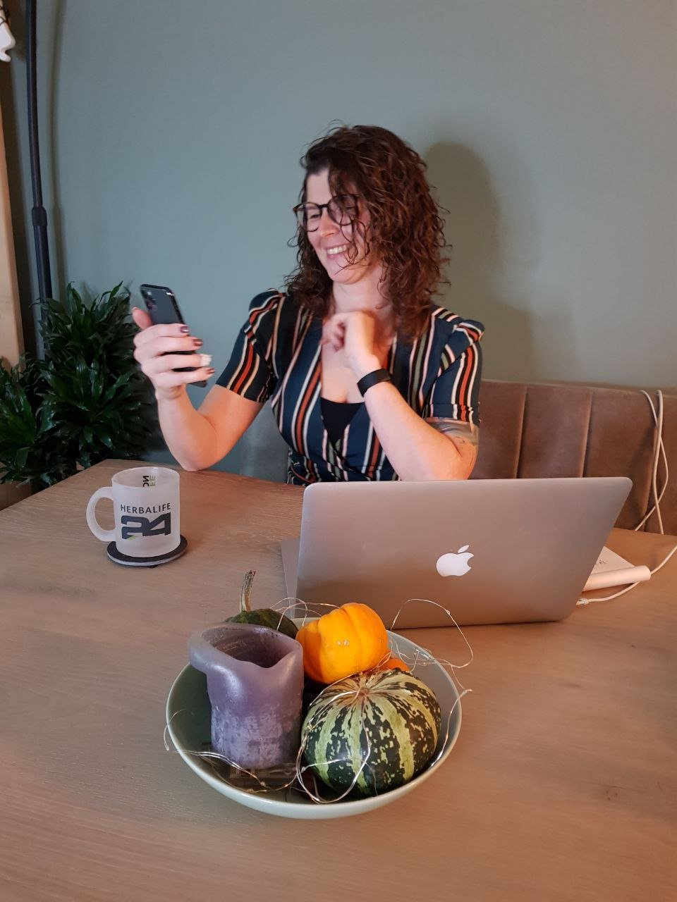
Begeleiding die blijft
Regelmatig een coachinggesprek en dagelijks support via de app, waar je ook woont. Ik laat je zien hoe je je doelen behaalt en vooral ook behoudt.
Mijn verhaal: toen en nu
Ik ben Mirlande Besemer. Ik weet hoe het voelt om moe te zijn, alles al geprobeerd te hebben en toch steeds terug bij af te komen.
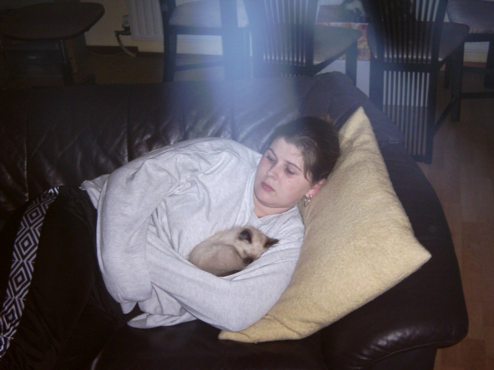
Toen
- In 2005 was ik moe, had ik overgewicht en was ik niet gelukkig.
- Ik probeerde vele diëten, steeds met dezelfde uitkomst.
- Ik werkte als financieel adviseur, een baan die me niet gelukkig maakte.
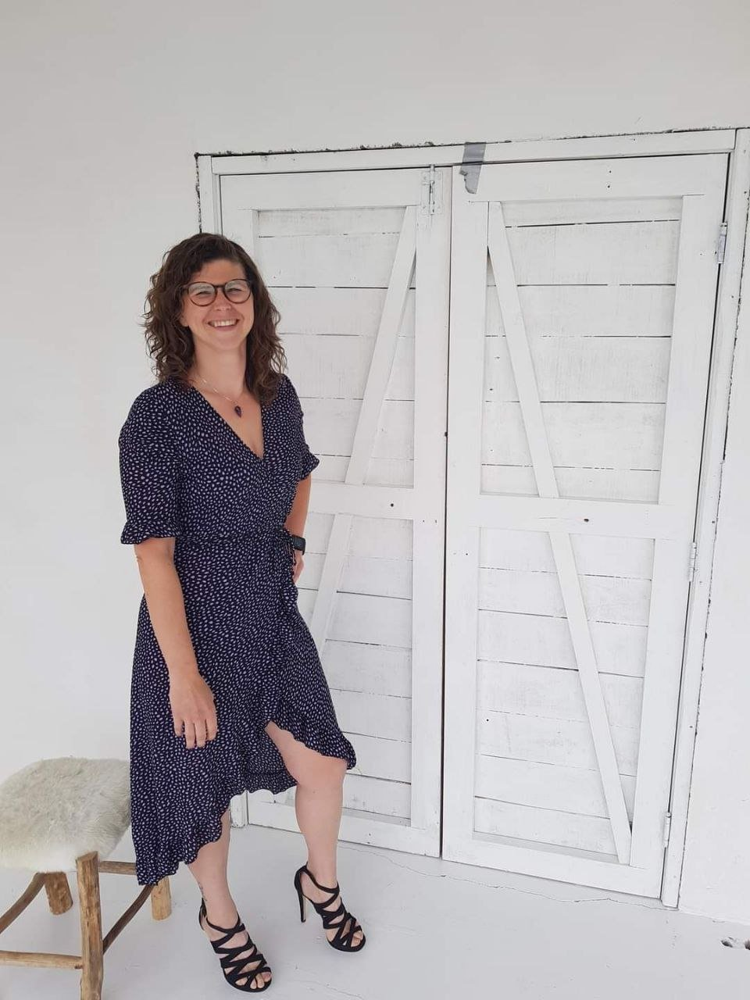
Nu
- Een coach die me echt begreep, met aandacht voor mijn voeding én voor wat er in mijn hoofd speelde, liet me zien dat het anders kan.
- In 2009 begon ik naast mijn baan als coach, sinds 2011 doe ik het fulltime.
- Met ons team van coaches begeleiden we elke maand meer dan 200 mensen.
Wat je van mij kunt verwachten
Het ging bij mij niet zonder tegenslagen. Mijn belangrijkste les: doorzetten, en focussen op wat wél goed gaat. Ik ben enthousiast, positief en eerlijk. Ik zeg het ook als je iets anders zou kunnen doen, maar het blijft altijd jouw keuze. Met humor en energie help ik je stap voor stap, op jouw tempo.
Ik woon in Middelharnis, met mijn man Elwin, onze bonusdochter, twee honden en kippen. Mijn focus ligt op vrouwen van 40+ die weer energie en kracht willen, in heel Nederland en België.
Maak kennis tijdens een gratis FitCheckWat anderen zeggen over mijn begeleiding
“Wat een kanjer is Mirlande! […] Zij stimuleert je op een positieve manier! Niet pushend maar positieve benadering! Zowel op fysiek als mentaal vlak is zij er voor je! Je voelt je echt op je gemak bij haar!”
“Goede begeleiding. Voelt als thuiskomen om even bij te kletsen, met een eerlijk gesprek.”
“Mirlande is een fijne oprechte coach, die met al haar enthousiasme je bewust maakt van je goede en slechte keuzes. Je maakt samen stap voor stap de doelen en dat op je eigen tempo.”
Meer verhalen van anderen, en mijn eigen dagelijkse verhaal, zie je op Instagram.
Voor en na: echte klanten, met toestemming
Echte mensen die ik begeleid. Met hun toestemming geplaatst.
Resultaten verschillen per persoon en zijn niet gegarandeerd.
Wat kost begeleiding bij het afvallen? Het FitPlan vanaf € 179,99
Het FitPlan is een all-in oplossing die je helpt om jouw doelen te bereiken. Je krijgt supplementen die passen bij jouw doel, en mijn persoonlijke begeleiding zit erbij.
Dit zit in elk FitPlan:
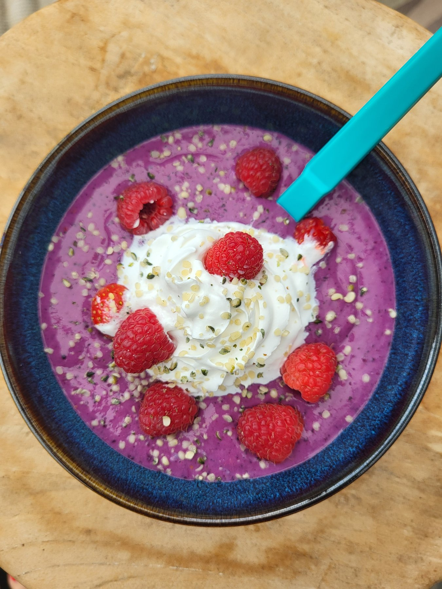
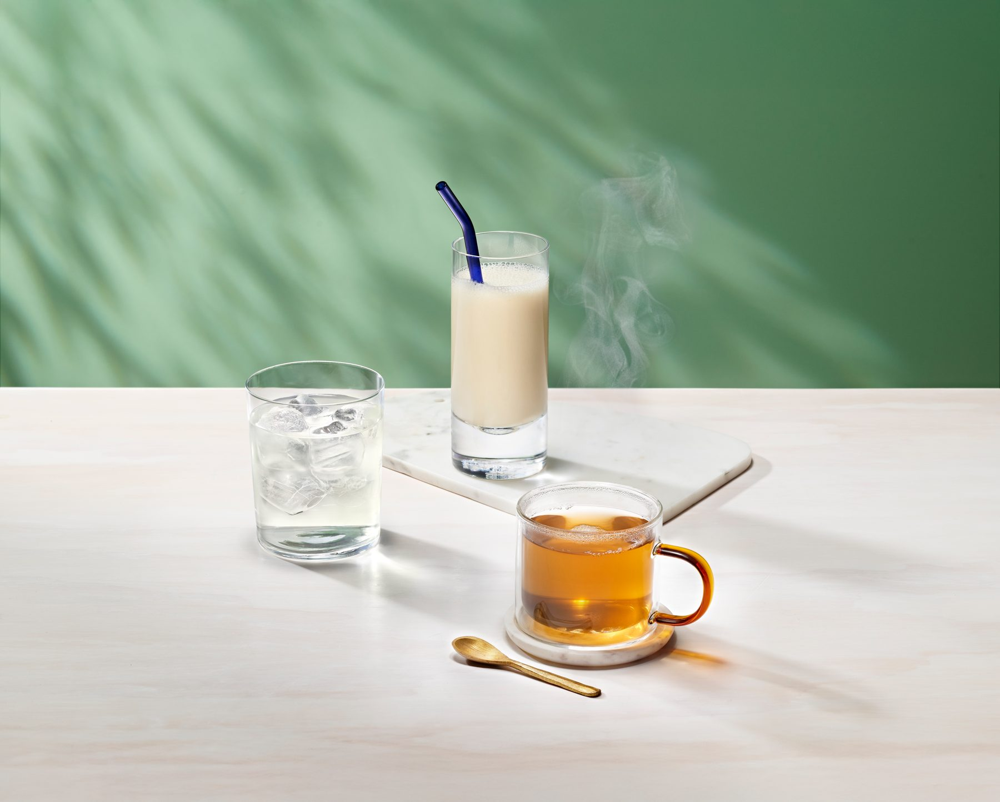
Voorbeelden, geen vaste pakketten
Bekijk de pakketten
Dit zijn voorbeeldpakketten. We kijken altijd naar jouw persoonlijke situatie en doelen. Na de gratis FitCheck stem ik het pakket persoonlijk met je af.
Basispakket voor de start van jouw FitPlan, met ondersteunende supplementen voor de aanvulling van vitaminen, mineralen en proteïne.
Dit betaal je als je start. Het is de adviesprijs, inclusief btw.
Trouwe klanten betalen minder. Meer korting of cashback is mogelijk als je anderen doorverwijst. Vraag me naar de mogelijkheden.
De pakketten zijn voorbeelden en de bedragen indicaties. Na de gratis FitCheck stem ik jouw pakket persoonlijk af. Individuele resultaten verschillen en dit is geen medisch advies. Je hebt 30 dagen geld-terug-garantie.
Geen abonnement: je bepaalt zelf hoe lang je doorgaat.
Veelgestelde vragen over afvallen na je 40e
Door te beginnen met kleine gewoontes die je volhoudt, in plaats van alles tegelijk om te gooien. Denk aan een voedzaam ontbijt, genoeg eiwit en groente verdeeld over de dag, voldoende drinken en bewegen dat bij jou past. In de gratis FitCheck kijken we samen waar jij het beste kunt beginnen.
Rond de overgang veranderen je hormonen. Veel vrouwen merken dat ze anders aankomen, slechter slapen of minder energie hebben. Ook neemt je spiermassa met de jaren af als je er niets aan doet. Daarom werkt wat vroeger werkte nu vaak niet meer. Heb je klachten of gebruik je medicijnen? Bespreek het dan eerst met je huisarts.
Een ontbijt met genoeg eiwit en vezels geeft je langer een verzadigd gevoel en helpt je de ochtend door. Wat bij jou past, hangt af van je dag en je smaak. In de gratis FitCheck kijken we samen wat voor jou een goed ontbijt is.
Ja. De coaching gaat online, dus je kunt overal in Nederland en België meedoen. De dagelijkse support en de online 10 Day Lifestyle volg je gewoon vanuit huis. Alleen de meting met de Tanita-weegschaal is op locatie in Middelharnis.
De pakketten starten vanaf € 179,99 inclusief btw. Je betaalt voor de supplementen, mijn begeleiding zit erbij. Er is geen abonnement: je bepaalt zelf hoe lang je doorgaat.
Plan je gratis kennismaking
Online of in Middelharnis kijken we in een persoonlijk gesprek waar je nu staat en wat jij nodig hebt. Daarna doe ik je een voorstel. Je zit nergens aan vast. Je bent welkom vanuit heel Nederland en België.
Liever direct contact? Bel of app me op 06-57327138 of mail naar info@mirlande.nl.
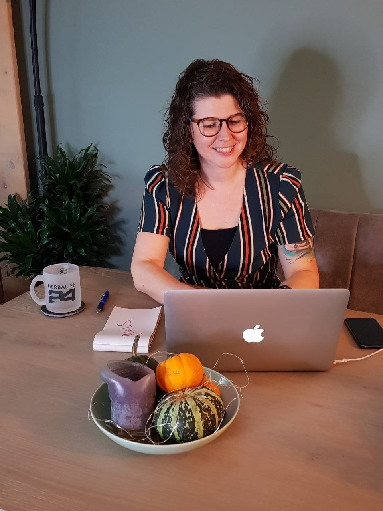
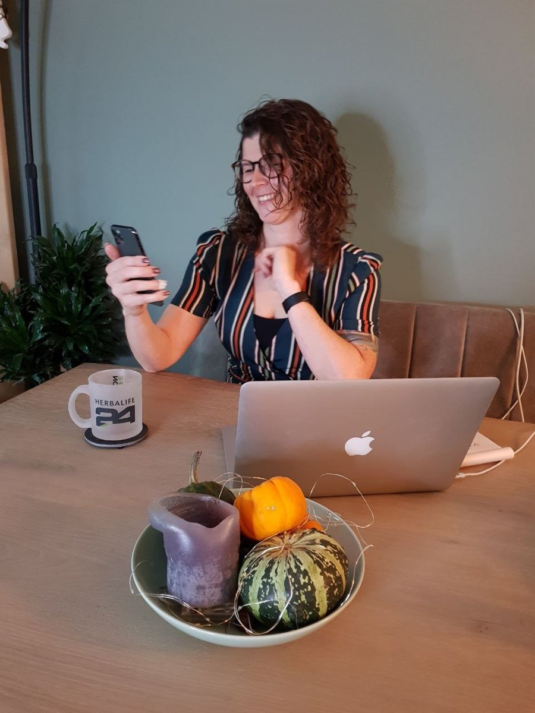
Gratis kennismaking
Online rond de 30 minuten, in Middelharnis 45 minuten: we kijken samen waar je nu staat en wat jij nodig hebt. Vrijblijvend, je zit nergens aan vast.
Je kiest een moment in mijn agenda. Daarna krijg je van mij een WhatsApp met de bevestiging en een korte vragenlijst ter voorbereiding.
Nog niet zover? Beantwoord eerst een paar vragen, dan neem ik contact met je op.
Mirlande Besemer · Onafhankelijk Herbalife Member · Zernikeweg 1, Middelharnis · 06-57327138